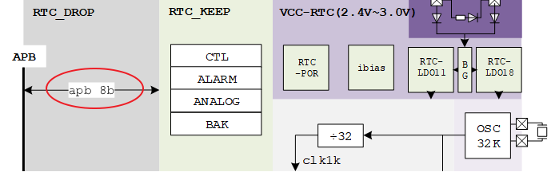

RTC 使用指南
15 Jan 2024
Read time: 1 minute(s)
Real Time Clock (RTC)
模块用于日期时间的保存和更新，在无网络下为系统提供一份有效的日期和时间。通过备用电池供电，在断电场景下也可以一直计数和保存时间，同时还有闹钟唤醒的功能。
- 以秒为单位，最大支持 100 年跨度
- 精度取决于晶振精度。RTC V1.0 支持校准，校准范围 ± 975 ppm（每百万次计数的误差）
- 支持一路闹钟设置（可通过软件来扩展成多路闹钟），闹钟精确到秒
- 闹钟支持输出一个中断信号（该信号也可以用于 32 KHz 时钟输出）给外部系统
- RTC V1.0 支持 128 bits 的系统数据备份，可用于掉电场景的数据保护
| 术语 | 定义 | 注释说明 |
|---|---|---|
| RTC | Real Time Clock | 实时时钟 |
低功耗设计
RTC V1.0 控制器为了低功耗设计，选用 8bit APB 总线作为数据总线，带来的影响是相关的寄存器都是 8bit 格式。
- 如果要设置一个 32bit 的秒数，就需要将其拆分成四个 8bit 写入四个寄存器。
- 如果是读取秒数，就需要从四个寄存器的值组合成一个 32bit 数。
